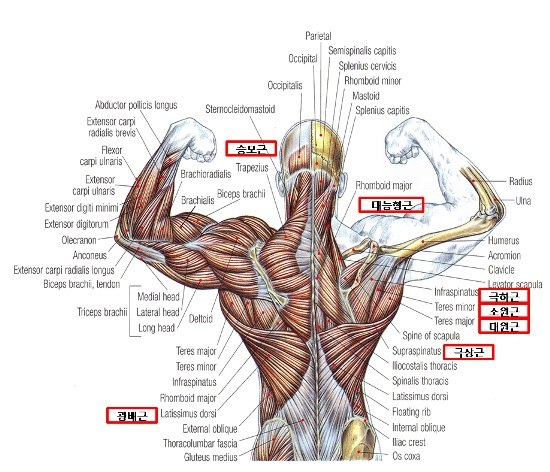

MAIN
등
가슴
어깨
하체
등운동이란 무엇인가?
등운동에 대해서 알기 위해서는 등의 근육들에 대해서 알아둘 필요가 있다.

등근육에는 대표적으로 크게는 광배근과 승모근 척추 기립근 그리고 그 안에서도 세세하게 여러 부위로 나뉘게 되는데 이러한 부위들을 자극을 주면서 근육을 키우게 해주는 운동들이 있다.
따라서 이제 각 근육들을 키울 수 있는 대표적인 운동들을 소개를 해주려고 한다.
-광배근
-승모근
-척추기립근